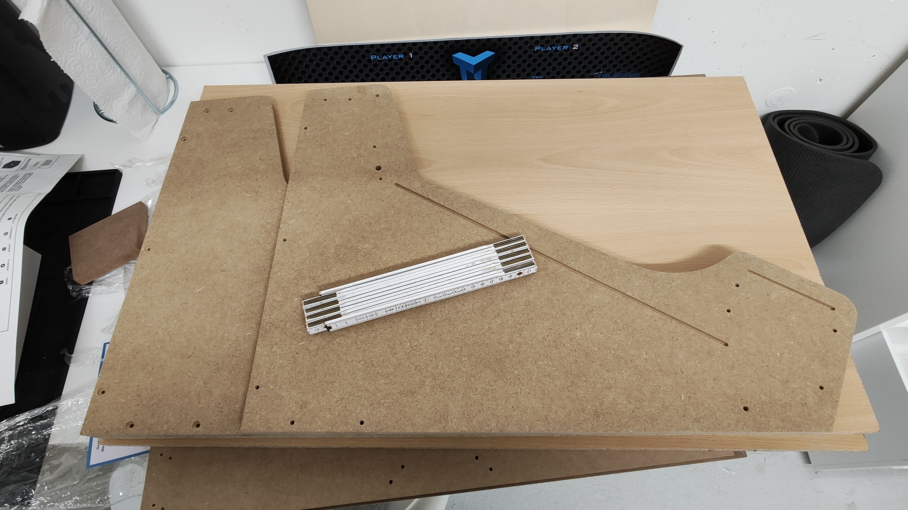

Most "retro" arcade kits seem to be designed to have a monitor mounted "horizontally", while "real" arcades in the 80s typically had the monitor mounted vertically.
For being able to play "modern" games, original arcade games and modern or console titles, the nearly square LG DualUp monitor seemed to be an ideal compromise.
As a starting point for this project, I ordered the 24" tabletop arcarde kit from telentec. When the kit arrived, it was immediately obvious that there was no way to fit the DualUp in there (which is consistent with the maximum monitor height in the specs).

Fortunately, I had still two a x b cm plywood sheets lying around from a previous project.